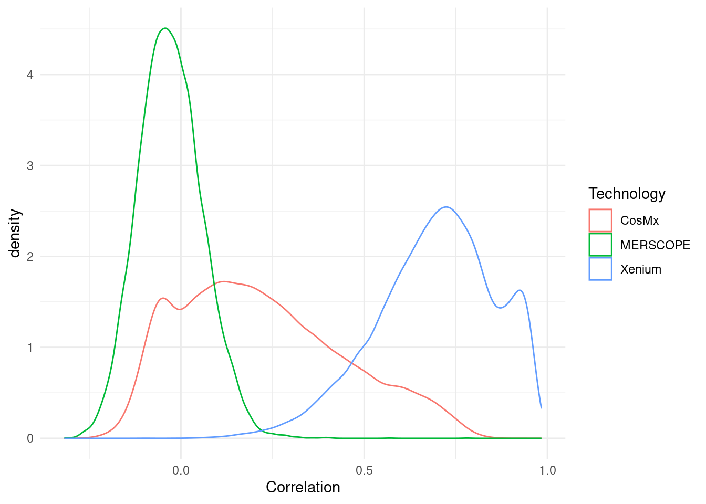
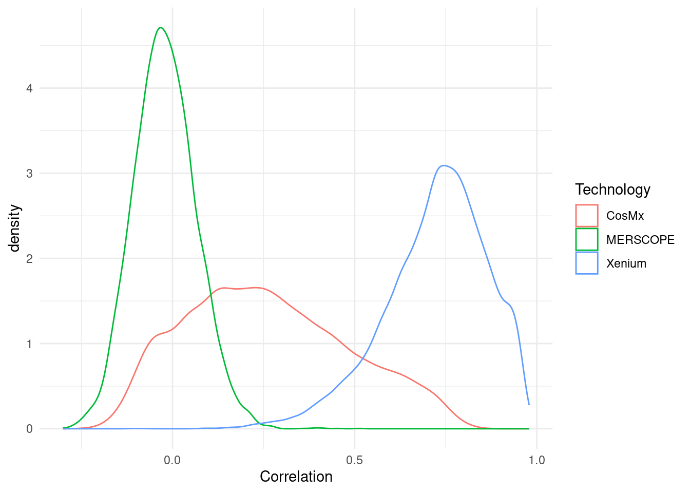
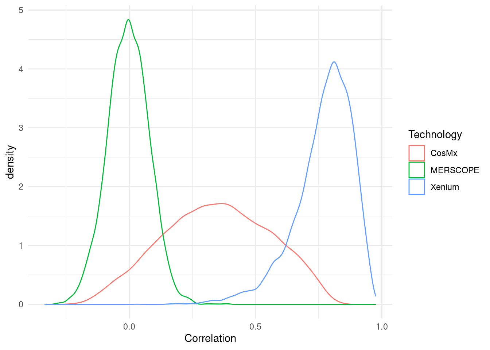
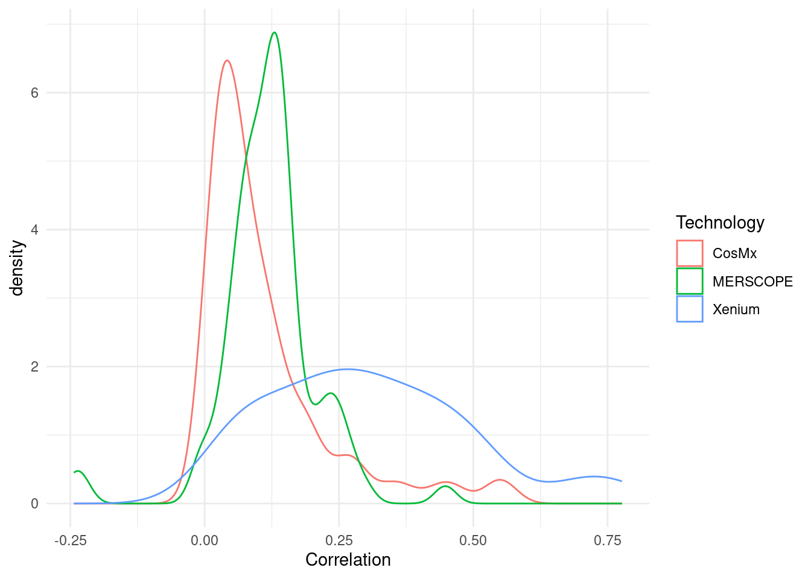
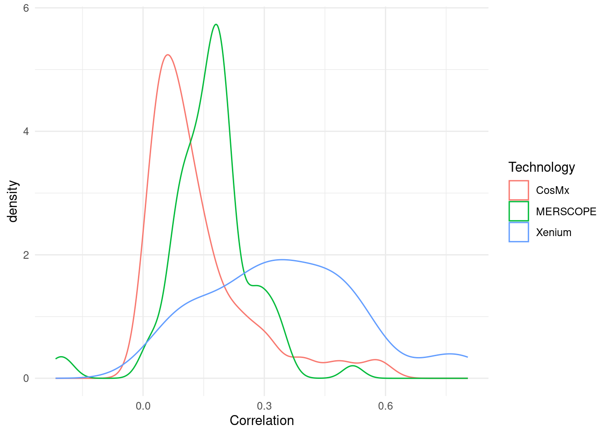
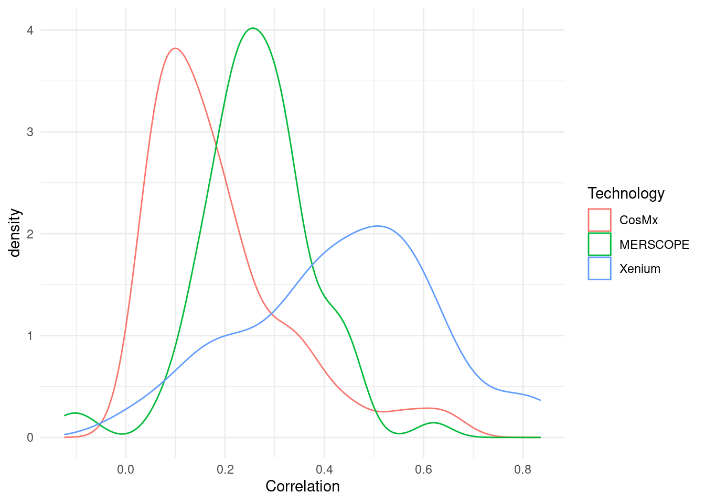

Comparison (common features)
Common feature-restricted correlation (spot-wise)
The correlation between adjacent slices was repeated but including only those features in common between all three technologies.


Feature-wise correlation



Note
These results show a clear difference in the technical variability of these technologies as applied to different tissues. Differences in tissue heterogeneity, genes measured and/or sample surface are likely to influence this comparison.